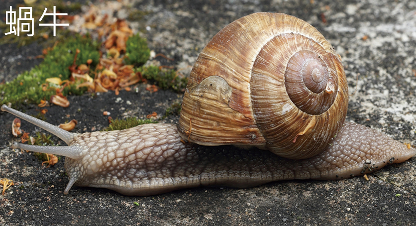
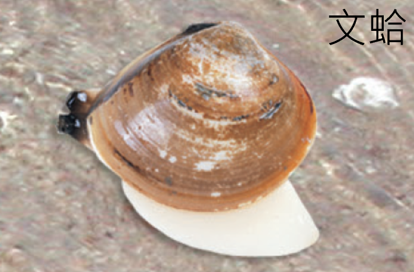
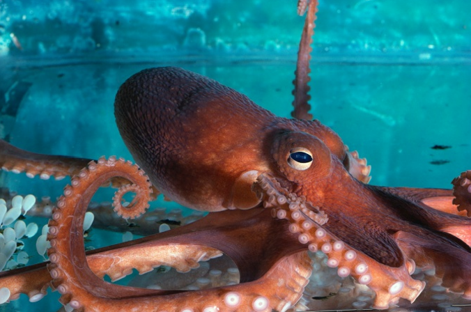
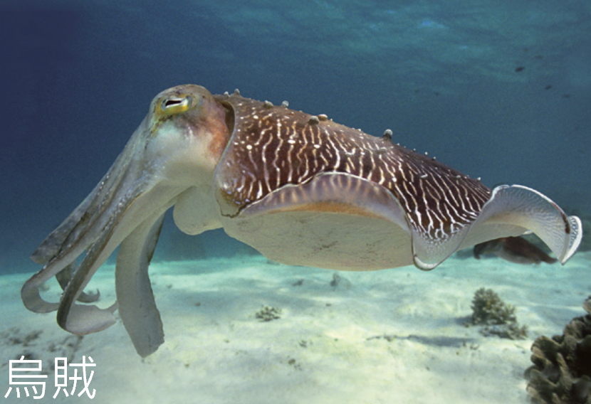

蝸牛背著殼，章魚沒有殼——看起來差很多，但牠們其實是同一門的親戚。關鍵特徵藏在身體裡。
軟體動物的主要特徵是身體柔軟、不分節，並具有由肌肉構成的足。
大多數軟體動物具有可保護身體的外殼，例如蝸牛和文蛤。不過外殼也會限制活動能力，所以有外殼的軟體動物通常行動較緩慢。
有些軟體動物的外殼已退化或消失，例如章魚和烏賊，因此牠們能更快速、靈活地移動。

蝸牛身體柔軟，有外殼保護，行動較慢。

文蛤具有外殼，足常稱為斧足。

章魚外殼退化或消失，活動較靈活。

烏賊外殼退化或消失，能快速移動。